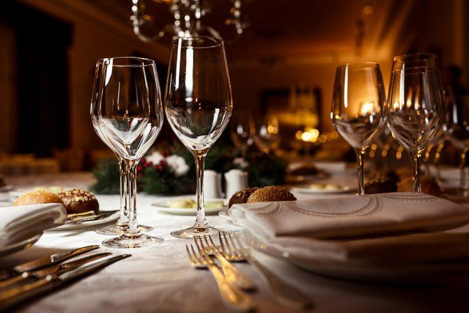

<div class="container">
   <div class="row">
      <div class="col-md-2"></div>
      <div class="col-md-8">
         <div id="about-txt" class="text-centered">
            <h1 class="page-header">
               A Bit About Us
            </h1>
            <br><br>
            <p>
               We pride ourselves on the personal touch and outstanding cuts of meat, seafood, chops and feature a cigar friendly outdoor covered patio. Service and quality are the name of the game and we take our relationships in the community seriously.  Reservations are strongly encouraged.
            </p>
            
            <p>
               We keep it simple. We like to use fresh ingredients and we like to let the food do the talking. Generous bowls of housemade pasta, locally-foraged mushrooms, delicately prepared fish
            </p>
            <p>
               Just as the chefs carefully source each ingredient, every element of the space, from the locally crafted banquettes to the modern china, has also been thoughtfully selected to enhance the entire dining experience.
            </p>
            
            <p>
                Italian-inspired food and offers innovative à la carte staple choices in addition to a popular chef’s choice fancy menu. The latter is a multi-course feast of seasonal dishes crafted by the chef for each table. We really recommend that you relax and put your dining experience in our hands. We’ll take care of everything
            </p>
            <p>
               Creating an aesthetic that mirrors the food and service philosophies of a restaurant is, quite simply, an art and must incorporate the neighborhood, the architecture of the building and the vision of the chef. 
            </p>
         </div>
      </div>
   </div>
</div>

